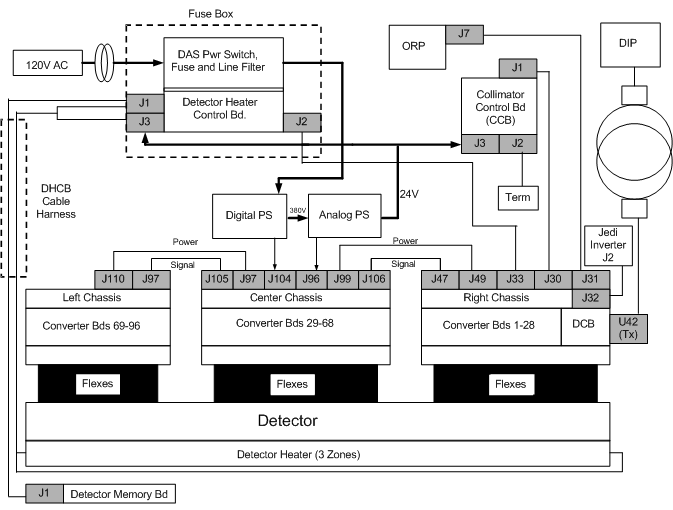
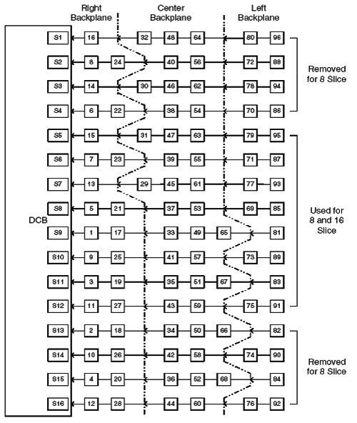
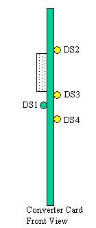
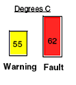
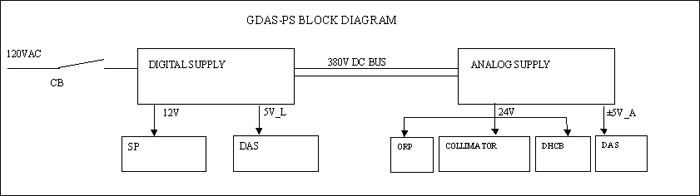
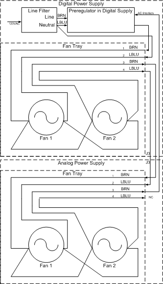
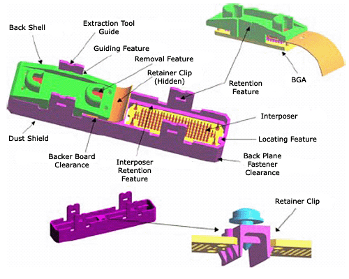
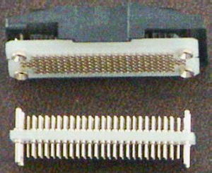
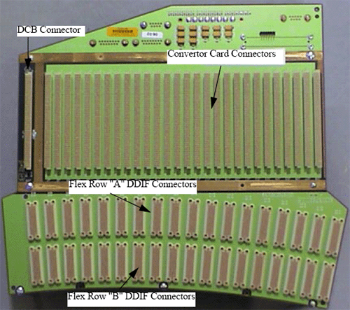
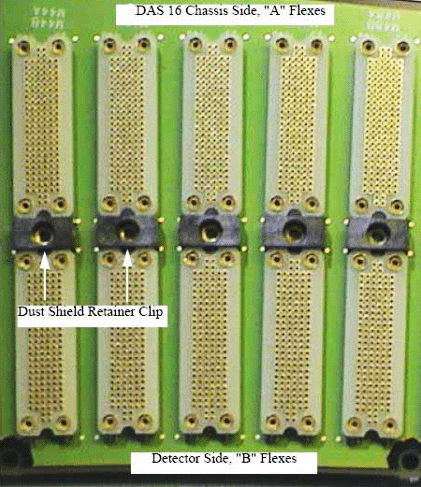

Operating Documentation
Direction 5196839-800, Rev# 6
RT16 and Xtra Service Info Adv
Operating Documentation |
| Last Revised: | June 2004 |
The Global Data Acquisition System (GDAS) is a replacement for the MDAS currently used in the LightSpeed family of scanners. It comprises the following:
96 converter cards, one DAS Control Board (DCB) distributed between three separate chassis.
Two Power supply chassis – one Analog and one Digital.
Fuse box assembly containing a single DAS fuse and switch.
The three chassis interface directly to the detector via pin and socket connectors.
Communications to the ORP is accomplished via the RCIB CAN bus.
Scan data is transmitted via fiber optics to the DAS Interface Processor (DIP) located in the console. The 850 Mbaud slipring is the interface between the rotating and the stationary gantry.
Inter chassis data transfer is performed via high speed serial bus. Refer to Illustration 2.
DHCB communication is via RS232 interface.
Illustration 1 below shows the block diagram of the GDAS utilizing the GEMS-IT power supply configuration. Electrically, the difference between the GEMS-IT and Astec power distribution is insignificant to the theoretical information provided in this document.
Illustration 1: GDAS Block Diagram

Illustration 2: Data Flow — Serial Data Stream

DAS 16 Slice Serial Data Stream Board to Board Map.
The smallest element of the X-ray detector matrix is a detector pixel. The detector pixel has a current output that is proportional to the incident X-ray flux.
Some applications will include the connection of multiple pixels in parallel to a single DAS preamplifier channel. The connection means is a FET switch array, that is external to the DAS and converter card and is in the detector assembly or module. The FET array will connect pixels in the ”Z” direction, which is the direction normally parallel to the longitudinal axis of the patient. Up to eight pixels may be connected in this manner. The output of such interconnected pixels shall hereafter be referred to as a detector cell. If an application includes pixels, which are not connected to an output cell or preamplifier input, such pixels will be connected to electrical ground by the FET array, or in part of the DAS external to the Converter Board. The disconnected pixels will present a FET off impedance to the DAS.
For most DAS channels, the detector cell aperture is one cell column or 1mm long in the azimuthal direction. However, some cell outputs will be electrically connected in either pairs or triplets in the azimuthal direction to form 2mm and 3mm cells. Detector cell so connected will be termed “ganged” cells. Because of the different source impedance associated with these cells, DAS performance will be affected or degraded. However, the Converter board preamplifier circuit shall be designed to be stable with the ganged source impedance cells.
The Converter boards will receive the detector output signal on the same backplane connector as the rest of the DAS control and power connections.
The GDAS-16 converter board processes low current signals from 128 X-ray detector photodiode outputs and converts these signals into two digital serial streams. One of these streams is for even numbered DAS channels (2,4,.......126, 128) and the second stream is for the odd numbered DAS channels (1,3,5,.......,125,127). In the even digital stream, we have low even channels (2,4,......,62,64) and high even channels (66,68,......,126,128). Likewise, in the odd digital stream we have low odd channels (1,3,......,61,63) and high odd channels (65,67,......,125,127).
Specifically the converter board performs the following tasks:
Integrate the low level current signals from 128 channels of a CT X-ray detector and convert them to 128 voltage/charge signals.
Convert the 128 voltage/charge signals to serial 128 digital values.
Setup the digital values for serial transmission and serially transmit the digital value.
Receives control and configuration setup from the DAS Control Board (DCB) through a serial CAN interface bus.
Perform a self-test on power-up.
The Converter boards provide the capability to receive data from a previous board on a daisy chain serial data stream, and retransmit such data interspersed with data acquisition data generated on the Converter board to either another downstream Converter board or the DCB. The Converter boards receive their control instructions from the DCB. These instructions include:
Shift clock.
Trigger signal.
Converter CAN Bus communication for control information.
Reset signal.
External reference current.
The converter card shall be externally controlled using the following signals:
S_TRIG (LVDS Differential pair view trigger signal): The nominal frequency range of this signal will be 984Hz to 2811Hz continuous. It is synchronized with the SH_CK signal defined below. S_Trig will be used by the converter board to initiate a data acquisition timing cycle for all the channels on the converter board. S_TRIG is sent by the DCB on the falling edge of the shift clock (SH_CK), and sampled by the converter cards on the rising edge of shift clock. The trigger signal is one SH_CK period wide.
SH_CK: It is a LVDS differential pair input signal that is used with S_TRIG to generate all data acquisition timing signals for the converter board. It is the clock used to shift data off the Converter Board to the DAS Control Board, and is free running. Anticipated frequency of this clock is 27-30 MHz.
CV_RST (Converter Board Reset): It is a high level active signal that is activated by the DCB (DAS Control Board). It is a semi-hard reset for the converter board.
CAN_Hi and CAN_Lo (Differential, bi-directional Signal Pair) used to implement the physical interface for the CAN control bus on the converter board.
CV_FLT* (Converter Fault Not): This is an open collector or open drain (wire-or) output signal from the converter board(s) that is activated by the converter board DSP, whenever it detects on the converter board a variety of different fault conditions. This signal is received by the DCB (DAS Control Board) and processed. It is anticipated that the DCB will poll the converter board via the CAN bus to determine which board pulled the "CV_FLT" signal line low.
IREF_EXT (Time Shared Tracker Current) This current is supplied from the DCB. This is a current reference of typically 1.0 microampere applied to the tracker channel input to correct for gain drift of a particular ASIC relative to all other ASICs in the final application system.
ADDR 6:0 (Board Address): It is a seven line input bus that is used by the board to determine its CAN bus address. These inputs will be hard wired with unique addressed on the GDAS-16 backplane for each one of the Converter board slots.
There are three calibrations done on the converter board prior to any scan. These are the internal and external gain calibration and the Alpha calibration. The DCB will report an error for a failure of any of these in the system error log. These calibrations are new with the GDAS-16 and do not replace any previous calibrations that were done on the MDAS in Fastcal or Detailed Cal.
Internal gain calibration
The Internal calibration is a process that compares the current source of the tracker channel, one at a time, with of each of the 64 input channels for the ASIC. This is an on-board check for each ASIC on the converter boards.
External gain calibration
The External calibration is a process that compares the external 1uA input current reference (from the DCB) applied to the tracker channel input to correct for gain drift of a particular ASIC relative to all other ASICs on all other converter boards.
Alpha Calibration
Linearization or alpha calibration is the process of determining the constants used for the ASIC's 4 input stages. Linearization is accomplished by processing several different known (relative) amounts of charge, observing the resulting stage counts, and solving for the coefficients that would yield the observed stage counts.
The Converter board uses the following power supply voltages: +5.0 Volt digital, +5.0 Volt Analog, and -5.0 Volt Analog.
Table 1: Converter Board - Input Power Requirements
| Characteristics | +5V analog | -5V analog | +5V digital |
| Supply current (typical) | 30A | 50A | 60A |
| Voltage tolerance | ± 10% | ± 10% | ± 5% |
| Maximum peak-to-peak noise and ripple (1) | 5mV | ||
| Maximum RMS noise and ripple (2) | 0.5mV | 0.5mV | |
| Maximum line regulation, 10% line voltage change | ± 10% | ± 10% | ± 10% |
| Maximum load regulation, 50% load change | ± 10% | ± 10% | ± 10% |
| Output transient response, maximum recovery to within 1% of initial set point with 50% load change | 50us | 50us | 50us |
| Maximum temperature coefficient | - | - | - |
| Minimum adjustment range | - | - | - |
| Over voltage limitation | ±6.2V | ±6.2V | |
LEDs are provided on the Converter board to indicate the following conditions:
DS1: Used to indicate board status and also illuminates on power up and reset.
DS2: Used to indicate presence of a trigger signal.
DS3: Used to indicate CAN communication.
DS4: Not used
Illustration 3: Converter Card LED locations

If the self-tests fail, the LED DS1 will flash to indicate an error was detected during the self-tests. The flashing will only occur until the DCB resets the fault line. The error detected will be reported to the system error log (gesyslog) on the console which will include the board number reporting the error. A single flash of the LED is just indicating a board reset and not an error. The error codes are:
Table 2: Error codes and descriptions
| Board Error | gesyslog error code | gesyslog error text | Suggested Action |
| FPGA Image Invalid | 260007924 | DAS Converter Board(s) contain an invalid FPGA image. | Rerun Flash download. If Flash download doesn't solve problem, replace converter board. |
| FPGA Config Failed | 260007925 | DAS Converter Board(s) failed to configure the FPGA. | Replace Convertor board |
| DSP Application Image Invalid | 260007926 | DAS Converter Board(s) does not have a valid application image in flash. | Rerun Flash download. If Flash download doesn't solve problem, replace converter board. |
| Invalid Flash Device | 260007927 | DAS Converter Board(s) has detected an invalid flash device. | Replace Convertor board |
| Max Temperature Exceeded | 260007928 | DAS Converter Board(s) have exceeded the maximum temperature limit of 65 degrees C. | Check DAS for defective fans. If temperature reading makes no sense, replaced board as temp sensor could be bad. |
| Register Access Failure | 260007929 | DAS Converter Board(s) failed to write an ASIC register | Replace Convertor board |
| Trim Table Read Failure | 260007930 | DAS Converter Board(s) failed to read the ASIC Trim Table | Replace Convertor board |
| Trim Table Write Failure | 260007931 | DAS Converter Board(s) failed to write the ASIC Trim Table | Replace Convertor board |
| Trim Table Verify Failure | 260007932 | DAS Converter Board(s) failed to verify the ASIC Trim Table | Replace Convertor board |
| Serial Out DP RAM Failure | 260007933 | DAS Converter Board(s) encountered an error accessing dual port RAM. | Replace Convertor board |
| Internal Gain Coefficient Error | 260007934 | DAS Converter Board(s) encountered an error during internal gain calibration. | Check DAS for defective fans. If temperature reading makes no sense, replaced board as temp sensor could be bad. |
| External Gain Coefficient Error | 260007935 | DAS Converter Board(s) encountered an error during external gain calibration. | Check DAS for defective fans. If temperature reading makes no sense, replaced board as temp sensor could be bad. |
| Linearity Coefficient Error | 260007936 | DAS Converter Board(s) encountered an error during alpha calibration. | Check DAS for defective fans. If temperature reading makes no sense, replaced board as temp sensor could be bad. |
| Linearity Overflow Error | 260007937 | DAS Converter Board(s) encountered a stage overflow during alpha calibration. | Check DAS for defective fans. If temperature reading makes no sense, replaced board as temp sensor could be bad. |
| Invalid Offset Trim Table | 260007938 | DAS Converter Board(s) contain an invalid offset trim table. | Replace Convertor board |
The LED DS3 flashes during the CAN communications and DS2 flashes every time Trigger is received.
The DCB is the main control board for the H16, 16-Slice GDAS Data Acquisition System (DAS). It packages all the converter card data into a single high-speed serial data stream, compatible with the receive function on the 16-Slice DAS Interface Processor (DIP).
Inner Row Serial Data Streams for an 8-slice or a 16-slice system.
Outer Row Serial Data Streams for a 16-slice system.
Converter CAN Bus communication for status, faults, chassis temperature readings, and serial number information.
Converter Board Fault Line
Input view triggers.
KV and MA analog signals.
RCIB CAN Bus communication for scan prescription information and FLASH download.
RCIB CAN Fault Signal.
RS-232 Bus communication for status, faults, detector temperature readings, and detector identification information.
Power supply voltages.
Shift clock.
Trigger signal.
Converter CAN Bus communication for control information.
Reset signal.
External reference current.
RCIB CAN Bus communication for DAS status, error, or scan complete information.
RCIB CAN Fault Signal.
RS-232 Bus communication for control information.
FET Control signals.
High-speed serial data stream containing the view data with embedded FEC CRC.
The H16 GDAS DCB will perform the following functions:
Interfaces with the ORP for Rx reception and scan completion via CAN bus.
Sets up gain and offset trim and controls the converter cards, via the converter CAN interface.
Receives triggers and starts acquisitions with the converter cards.
Performs serial-to-parallel conversion on data streams from the converter cards, does parity checking on the data, and runs it through a translation table for view data ordering.
Adds Forward Error Correction (FEC) to the channel data and sends it across the slip-ring to the Scan Reconstruction Unit (SRU) via the high-speed serial data interface.
Detects jitter and timeouts in the view trigger signal.
Controls the operation of the Detector Heater Control Board and monitors the subsystem for faults.
Monitors the power supply voltages to make sure they are within the software programmable limits.
Acquires the kV and mA values for each scan.
Controls the FET switch array in the detector to change the number and thickness of scan slices.
Monitors the DAS subsystem for various faults.
Stores and sums the z-axis reference channels, and performs calculations that control the collimator cam positioning. This is used to track the x-ray beam and keep it centered on the detector.
The DCB Host Interface will be used to control DAS operation and to communicate DAS status. All CAN signals will be optically isolated between the DCB and the network. The 16-Slice Right Backplane will have the 15-pin sub-D connector pair that supports the daisy-chained CAN interface. Proper termination must be attached to the unused port connector on the backplane. The DCB will implement a fault interface, called RCIB_CAN_FLT, consisting of a twisted pair wire signal that is bi-directional to the DAS. Both input and output are optically isolated. The DAS will use this interface to detect an abort condition from other controllers and to initiate an abort to other controllers. When a fault is initiated or detected, the DAS will go into its fault sequence.
There are two methods to reset the DAS, via CAN message or reset bus. Both methods cause the DAS to go through the same reset sequence and timing. All DAS hardware is in a known and safe state upon exiting reset.
The DCB will implement a reset bus interface, called RCIB_CAN_RST, consisting of a twisted pair wire signal that is optically isolated from the DAS. The DAS can only monitor but not drive the reset bus. The DCB will receive the external view trigger input, called E_TRIG, from the ORP via a twisted pair wire. This input signal is optically isolated from the DAS. An inactive to active state transition for this signal signifies a trigger and will cause the DAS to begin scan/offset view data collection. The GDAS-16 will require “no data transmit” triggers to fill the data conversion pipeline in the GDAS-16 Converter Card. These triggers will be sent to the converter cards, but the data received by the DCB will not be transmitted to the DIP. Additionally, the GDAS-16 will require “post-triggers” to be generated by the DCB at the end of the scan to finish the data conversion in the GDAS-16 Converter Card.
Note that there is another CAN interface on the DCB for communication within the DAS to the converter cards.
Measured scan kV and mA are read by the X-ray Generation Subsystem and fed back to the DAS so they can be inserted into the view data stream. The Generator Interface is implemented on connector J32 located on the 16-Slice Right Backplane. Signals are routed from this connector to the DCB via the 192-pin connector on the DCB. These signals are differentially driven by X-ray Generation and received by the DCB.
The DCB will generate 18 signals to configure the detector FET MUX circuitry. Each of the following three groups of detector modules uses six of these signals for their MUX configurations: Z-axis Upper Detector (ZUFET), Data Channel Detector (DFET), and Z-axis Lower Detector (ZLFET). These signals are set to 0 volts and –5.0 volts when they are in the OFF and ON states respectively. The desired state of these signals is left to firmware control prior to any scan or during system initialization. FET control signals are routed from the DCB to the backplane via the 192-pin connector on the DCB.
The DCB will communicate with the Detector Heater Control Board (DHCB) using an RS-232 serial communication interface. This interface will provide the path for the DCB to setup and control DHCB operation, to monitor the DHCB subsystem for faults, and to obtain detector temperature readings for inclusion in the view data stream. The serial interface will be a simplified 2-wire RS-232 implementation (with no hardware handshake capability) operating at 19.2 kBaud. The setup includes 8-bit word length, no parity, and one stop bit.
On power-up, the DCB detects the presence of the DHCB in the system using a resistor located on the DHCB. The DCB will convert the resistance proportionally and compare the value to a pair of setpoint registers. If the presence of the DHCB is detected, the DCB will begin to communicate with the DHCB via the RS-232 interface. The Detector Heater Control Board Interface is implemented on a dedicated connector (J33) located on the 16-Slice Right Backplane. Signals are routed from the DCB to this connector via the 192-pin connector on the DCB. The signal voltages are a minimum of +/- 5VDC. Signal currents are on the order of 10mA.
Test points on the DCB as shown in the table below:
Table 3: Test points and description
| Test Point | Label | Description |
| TP1 | TDO | JTAG Data Output for FPGA programming |
| TP2 | LGND | Digital Logic Ground |
| TP3 | VCC | +5V Digital Power |
LEDs are provided on the DCB to indicate the following information:
Power-on information. This LED will illuminate if the board is powered on.
DCB in reset. This LED will illuminate if the DCB is in its reset condition and not booting.
DCB active. This LED will blink a “heartbeat” if the DCB has booted and passed its power-up diagnostics.
RCIB CAN status. This bank of LEDs will indicate RCIB CAN status and fault information.
RCIB CAN fault. This LED will illuminate if there is a RCIB CAN fault condition.
Serial Data Loopback error. This LED will illuminate if there is a serial data loopback receiver error.
The maximum required elapsed time from power-on to full specified DAS performance is one (1) hour. Time to meet full specified DAS performance is computed on the basis of two minutes warm up per minute since power was last on, or 1 hour, whichever is less. However, under no conditions where the power has been temporarily turned off, shall the required warm-up (to meet full performance specification) be less than five (5) minutes.
Each Converter board has its own temperature sensor that is constantly monitored:
If the temperature reaches 55° Celsius, then a Warning Error message will be posted to the Status Area of the ExamRx Desktop and associated Error Message in the error log.
If the temperature reaches 62° Celsius, then the DAS will report an Over-Temperature Fault and will prevent further scanning until the DAS cools and is reset. Refer to Illustration 4.
Illustration 4: Temperature Sensor Indicators

Conditions that lead to DAS over-temperature faults include:
Room Environment/Temperature.
DAS cooling fans not working or Air Plenum not installed.
DAS filters are dirty.
Gantry fans not working properly.
All power supply configurations have outputs that are isolated from the 120VAC input by a transformer. Each power supply chassis has a primary output voltage that is key to the other outputs. If this primary voltage output looses regulation or fails, the other outputs from that supply are suspect. The primary output from a power supply chassis should be checked for any potential issue suspected for any voltage output from that chassis. For reference concerning this theoretical explanation of power supply operation, see Illustration 5 for a block diagram of the GEMS-IT power supplies.
Illustration 5: GDAS GEMS-IT Power Supply Block Diagram

The Digital Supply has two isolated voltage outputs:
+12V rated for 1.7 Amps
+5V (5V_L) rated for 90 Amps. This output is the primary output for this chassis.
The DCB and GDAS-16 converter cards are powered from the +5V_L supply. The Schleifring slipring transceiver utilizes the +12V supply.
The Analog supply has three isolated voltage outputs:
+5V rated for 37.1 Amps.
-5V rated for 51.5 Amps. This output is the primary output for this chassis.
+24V rated for 11.8 Amps continuous, 17.8 Amps momentary.
The Detector heater/cooler, DHCB, collimator, and ORP are all powered from the 24V supply. The Converter cards utilize the 5V supplies.
OUTPUT NOISE AND RIPPLE
The analog supplies for the DAS should have noise and ripple less than 0.5mV rms.
The +5V logic supply maximum ripple shall be 5 mV peak to peak.
The +24V supply maximum ripple shall be 10 mV peak to peak.
OUTPUT VOLTAGE ADJUSTMENT
The +5V_L, +5V_A, and –5V_A outputs are adjustable by means of potentiometers and are easily accessible without cover removal. For both power supply configurations the use of the DASTools Aux channels test is required to correctly adjust the supplies and should be used as the reference for the voltage level seen by the DCB during power supply adjustment.
STATUS INDICATORS AND POTENTIOMETERS
Visual indicators for each board indicating that the unit is energized are provided. Due to the load variations, it is necessary to provide manual voltage adjustment for the +5V_L output, and +/-5V outputs. See the tables below for available LEDs and adjustment pots.
Table 4: Digital Supply Parameters
| Lamp | Type | Location | Color | Description | Visible |
| DS1 | Neon Lamp | Preregulator Bd | Orange | AC ON | Internal |
| DS2 | Neon Lamp | Preregulator Bd | Orange | 385V ON | Internal |
| DS16 | LED | Digital ADJ Bd | Green | +12V ON | External |
| DS20 | LED | Digital ADJ Bd | Green | +5V_L ON | External |
| POT | Location | Nominal Value | Description | Visible |
| R100 | Digital ADJ Bd | 10.36 Ohms | +5V_L Output Adjustment | External |
Table 5: Analog Supply parameters
| Lamp | Type | Location | Color | Description | Visible |
| DS2 | Neon Lamp | Input Analog Bd | Orange | 385V ON | Internal |
| DS18 | LED | Analog ADJ Bd | Green | -5V ON | External |
| DS15 | LED | Analog ADJ Bd | Green | +5V ON | External |
| DS __ | LED | Digital ADJ Bd | Green | +24V ON | External |
| POT | Location | Nominal Value | Description | Visible |
| R3 | Analog ADJ Bd | 10.365 kOhms | -5V Output Adjustment | External |
| R4 | Analog ADJ Bd | 10.365 kOhms | +5V Output Adjustment | External |
The GEMS-IT power supplies require fans for cooling. The Astec power supply configuration does not. For the GEMS-IT power supply configuration, two fans in each power supply chassis are attached to a removable tray that can be replaced without removing the power supply from the rotating base. (There are no air filters to clean for either power supply configuration). The fans are connected by white molex connectors with an interlock line such that the supplies will not turn on if the fans are not connected. See Illustration 6 for details.
Illustration 6: GDAS-16 Fan Tray Block Diagram

The power supplies have thermal sensors. The power supplies will shut off in an over temperature condition, then restart when temperature sensors detect a low enough temperature. This cycle can be about 5-10 minutes depending on many factors that affect the cooling.
See GDAS-16 Power Supply Troubleshooting for further information regarding power supply dependencies and how to isolate a problem.
The backplane used on the DAS is separated into three sections: Right, Center, and Left. The three backplane boards are connected via a ribbon cable, with a 100–pin connector on each board. The GDAS-16 backplane is different from the MDAS backplane in its structural features to allow use in faster gantry rotation speeds.
Right Backplane
The Right backplane contains connectors for converter boards 1 through 28. FET LEDs are located on the Right Backplane.
Also DCB communications with the ORP, Jedi Inverter, and Collimator control board connections.
DDIF Row A and B connections.
Center Backplane
The Center backplane contains connectors for converter boards 29 through 68. Test Points are available on the Center Backplane to measure Power Supply voltages.
DDIF Row A and B connections.
Left Backplane
The Left backplane contains connectors for converter boards 69 through 96. DDIF Row A and B connections.
The DAS backplanes have been subdivided into four sections each. Test points and load resistors have been added to protect the DAS backplanes from short circuit of the DVSS (-5v_a). This is the detector bias voltage that applies -5vdc to the FET switching array. This is not the FET Control lines circuitry. During normal system conditions the test points would read -5vdc referenced to DAS analog ground.
The DDIF is a pin and socket interface. Both the DAS backplane and Detector Flex leads are female pins. The “Interposer” is a male to male interface. Illustration 7 shows the design features of this interface. The BGA or female connector is also on the DAS backplane (not shown) minus the backshell.
Illustration 7: DAS Detector Interface (DDIF)

The Interposer uses four (4) large ground pins as guides to center the device in the BGA connectors. There are 150 pins per interface and 114 interfaces total, two per detector module. There are 128 data channels, six FET control lines, nine analog grounds, one signal ground, four shield grounds, one bias voltage line, and one unused pin. An analog isolation ground trace surrounds the bias and FET control lines. This is to ensure that no leakage currents can occur resulting in random FET control settings. The shield grounds perform EMI isolation. The signal ground reduces stray current induction onto the data lines.
Illustration 7 identifies the major components and design features of the DDIF.
Circuit board material with female pins pressed in. Used on both the flex leads and MDAS 16 backplanes.
A molded plastic part specifically designed to allow flex removal from the DDIF using the Flex Extraction Tool described in Section 9.
Circuit board material with male to male pins pressed in. Used to make the electrical connection between the flex leads and the MDAS 16 backplane BGA connectors. Four large diameter pins provide electrical grounds and a self guiding feature when inserting the Interposer onto the backplane BGA connector.
A molded plastic part designed for four basic functions.
Minimize dust contamination of the DDIF assembly.
Provide a positive locking feature to prevent the Interposer from loosening or falling off the DDIF during gantry rotation.
Provide a contact or guide point for the Flex Extraction Tool to press upon when removing flex leads from the DDIF.
Molded channel to aid in the attachment of the flex BGA to the Interposer and a positive locking feature to prevent the flex lead from loosening or falling off the DDIF during gantry rotation.
A molded plastic part, with metal female threads, designed to secure the Dust Shield in place. Refer to Illustration 10.
Illustration 8 shows the Interposer and BGA connector. Some features are:
Interposer has four large diameter pins to aid in mating to the BGA.
BGA connector has four large diameter pins that are coned to aid in mating to the Interposer.
Illustration 8: Interposer, Flex BGA, and Flex Back-shell

Illustration 9 shows the arrangement of the Right Backplane. The DCB and Convertor slots as well as the DDIF A and B row identification. The center and left backplanes are similar.
Illustration 9: DAS Backplane Layout (Right Backplane Shown)

Illustration 10 highlights the Dust Shield Retainer clip. These clips can be replaced if needed.
Illustration 10: DAS DDIF

See MDAS 16 DDIF Tools.